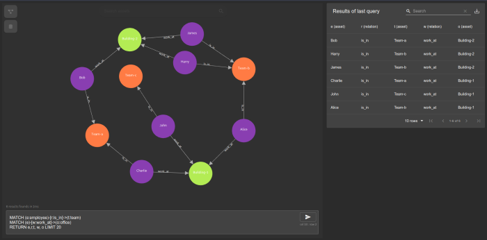

Operationalising your Infrastructure With GraphOps
This page contains information I’ve been gathering in the name of an emerging branch of operations I’m dubbing “GraphOps”. This isn’t staring at XY scatter plots, but dealing with infrastructure as a richly connected graph of resources that either consume or provide services to and from users. They are alive, not quite like Johnny 5, but in the sense of continually reflecting state and relationships.
Imagine a world where an unexpected issue triggers the generation of a blast radius linked tree, highlighting outcomes, failures and steps taken to recover. With a rich tapestry like a graph representation of your infrastructure, you have a foundation for self-driving and self-healing systems. It becomes possible to make a change and verify or validate the outcome and even provides percepts for machine-learning and artificial intelligence.
I’ve been lucky that different groups have humoured me with mad ramblings. I’m firmly of the belief the way forward for operations is in this manner.
Imagine knowing the what, where, why and how for your infrastructure and service delivering resources - always.
David Gee, 2021
Video Resources
IPSpace Autumn 2020: Evolution of Network Automation
iNOG14: Automata Without a Map
NANOG81: Navigating Automata Without a Treasure Map
Inspiration
-
Mark Burgess and Jan A.Bergstra - Promise Theory
-
Jeff Sussna - Designing Delivery
-
Harlan. D.Mills - Software Productivity
-
Edsger W.Dijkstra - A Discipline of Programming
-
John Ousterhout - A Philosophy of Software Design
-
Fred Brooks - No Silver Bullet
-
Rachel Traylor’s education on Graph Theory and Reliability (see IPSpace offerings)
- A fantastic mathematician and available for work (if you didn’t know that!). She’s software savvy and opened me up to levels of depths I didn’t know existed.
-
Simon Wardley - Wardley Mapping
-
Cellular Automata
-
Labelled Transition Systems
-
Matroid Theory
-
Terminator Salvation
- Glimpse into the imagination of someone thinking about SkyNet. What I saw when the film hit the cinema excited me. Here are some screen shots.
Images sourced from: http://mn8studio.com/project/terminator-salvation-skynet-ui
Reading Resources
Google have a system called MALT. The paper is an interesting read and there is lots of common sense shared with readers. MALT appears to be reasonably useful and more importantly, used!
Usenix MALT video link Usenix MALT paper link
Some Notes on Writing Code
Arbitrary Approach vs Schema Drive
When building out the prototypes for exploring GraphOps, one of the biggest issues was writing code that dealt with arbitrary graph structures and relationships. To add to the fun I did it with a typed language! Another gotcha came in the form of preserving ordered data when transorming from a representation such as JSON or XML to a graph and back again. I solved some of these issues with meta-data tags, recursive algorithms and an interlingua I call dTree.
Providing codified schemas to code so that it can explore data trees in a meaningful manner (removing guess work) is a helpful approach. You can define permitted and expected kinds of relationships and provide patterns of anticipated data trees. If the data changes further down the line, change the schema and you are safe. You will find that the data structure may require pruning or reducing at times to mirror schema changes if you are removing Vs or Es (vertices and edges respectfully).
Idempotency and Validity
Sometimes you need to know the integrity of a sub-graph quickly and so I began to think about trees as hash graphs. One approach was to create a CSP system that monitored activity to and from the graph, but what about cold reboots? How would I get to a point of validity assurance? That came in the form of hashing subgraphs and at sensible periods of time, checking the hash for validitiy, or if part of the graph was changed, I’d rehash that part of the graph and store it with a timestamp. You might be wondering why this kind of thing? Well, if you’re going to have two-way processes with a graph that represents live infrastructure, you will quickly need to know if something was how it was prior to extracting state change data (like configuration inputs). You also will be building in idempotency mechanisms. The real world is heavily idempotent, yet computers don’t by default behave this way.
Approaching Schemas
Operational schemas vs programmatic schemas are worth considering. For instance, dGraph and GraphQL will require some form of concrete schema. But what if you do not have one? You can for a taxonomy upon your project and create a transform function for data coming in and leaving your system, or you can keep things fluid and have ‘operational schemas’, i.e., a defined schema at the user level (post coding) and have this kind of schema style handled in code. The former is easier, the latter adds complexity to each programming operation. If you know however that whatever schema you are likely to create will adhere to rules, then it’s not so bad. This is why I initially created dTree as a means of an interlingua middle ground to process data.
Native Graph Functionality vs Application Architecture
When discussing graphOps with engineers and designers, regularly the conversation jumps immediately to ArangoDB or Neo4J, instead of what the graphs represent, how they’re mutated and consumed. This conversation is comparable to having a conversation around computer science, yet having one party discuss everything through the lens of say Python. Putting contstraints on a graphDB for something like relationship creation (permit/deny) is useful sure, but do you really want to move that logic to the DB or do you want to handle it in the code that talks to the DB? I love the notion of native graphOps, where people directly query the graph and search for information, however, I’m also old enough and ugly enough to know that people cannot be experts at all things. Pre-canned queries and pre-ordained opinions on usage goes along way to making your product or prototype work simpler for customers, even though it might be mind blowingly complex underneath.
Storing Live Data
One aspect I have put some thought into is storing live data on a graph. As network devices begin to emit more telemetry, it would be foolish to grab that data and update a graph in real time. However, having an ML layer that deals with windowed data (parameters for this are auto managed through some form of feedback from the computation process or user guidance), then storing the output of that onto the graph seems perfectly reasonable. It also comes down to context and data representation. Graph data is linked data and there isn’t anything wrong with having a vertex that represents another data store your system can query for deeper state knowledge.
Code Libraries, SDKs and Data Representation
JSON-LD
Is a style of JSON used for ‘Linking Data’ hence the LD bit. It’s use is for representing data that has a link to some other data and there is a working group with a drive to formally specify JSON-LD 1.1.
{
"@context": "https://json-ld.org/contexts/person.jsonld",
"@id": "http://dbpedia.org/resource/John_Lennon",
"name": "John Lennon",
"born": "1940-10-09",
"spouse": "http://dbpedia.org/resource/Cynthia_Lennon"
}
GraphQL
An API type that empowers you to ask for the data you need, instead of getting a boat load of data that you do not. It allows you to get related data using a query, for instance, the number of coffees that your vending machine served in corridor 12 on the top floor of a cruise ship. You could also take readings from all of the coffee machines on the top floor of the cruise ship. You will need a schema however and dealing with arbitrary data can be painful.
Neo4J
A graph database written in Java with reasonable performance, supporting some 3.4 billion nodes. This database uses a query language called Cypher. I’ve used Neo4j a lot. It has support for many programming languages.
dGraph
A native GraphQL database written in Go. If you’re doing web design and want an easy approach to providing a GraphQL back-end, check dGraph out.
ArangoDB
ArangoDB is a popular database that provides for graph, document and search functionality. It’s popular with developers and has a wide set of language support.
Blog Posts & White Papers
WIP
Vendors
Forward Networks are one of the first to have appraoched network modelling in a graph modelled way. They offer an opinionated set of views and workflows for network engineers to get to grips with.
Things Worth Listing (yet to investigate)
This is a project claiming to be a graph oriented knowledge base. Could be interesting! Might beat some of the hard work adding type functionality to Neo4J. https://github.com/clems4ever/go-graphkb
Contributing
Warning-> This is not a marketing site. If you are a vendor looking for cheap insertion points, look no further. $1m and this page is yours. I jest. Please be transparent and honest with the information you wish to list. I’ll accept pull requests from an up-to-date fork pending review.
Dave
- Tags: Software Skills, Operations, GraphOps
- Categories: GraphOps